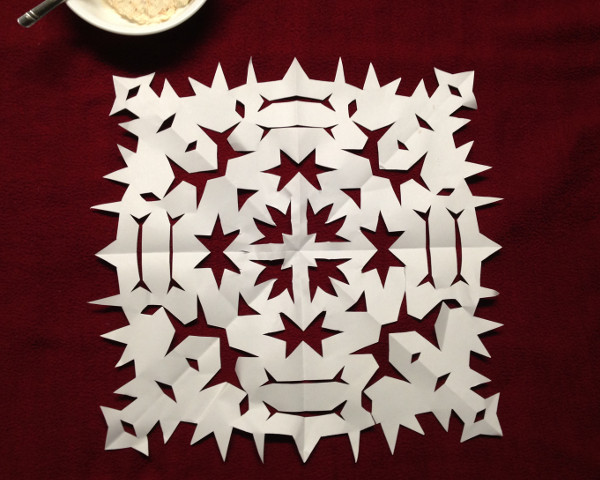
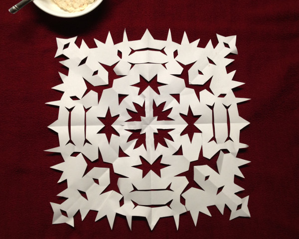

PAPER SNOWFLAKE,
cut paper
Cadie and I used to cut out butterflies and snowflakes a lot. We got away from it for a while, then recently she goaded me into making this one.

Cadie and I used to cut out butterflies and snowflakes a lot. We got away from it for a while, then recently she goaded me into making this one.